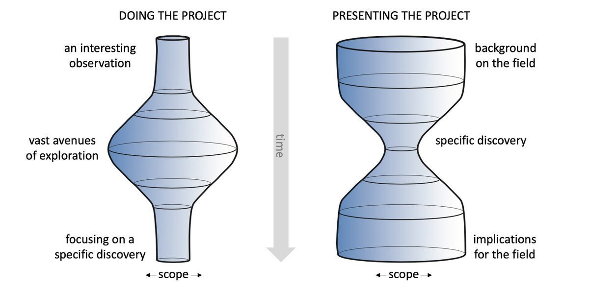
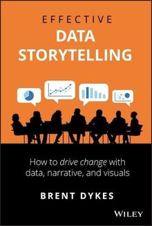
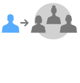
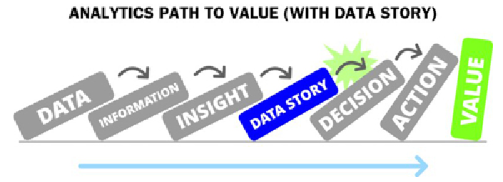

W#08 Main Insight
Many material from Dykes (2019)
Doing vs. Presenting Projects

Lesson: How much time we spend on doing a project is not reflected in how much time we spend presenting a project.
Milestones
2 Main insight 💡
Target Achievements:
- Target audience described
- List of main insights in your report drafted (about 3-6 or more when the team is large)
- Prioritized what will be the main insights
Milestones
2 Main insight 💡
Target Achievements:
- Target audience described
- List of main insights in your report drafted (about 3-6 or more when the team is large)
- Prioritized what will be the main insights
3 Visual Drafts 📊📈📉️
Target Achievements:
- For each insight
- a visuals drafted in the report or the presentation (a draft can be a first coded visual, or even photo of a sketch on paper)
- notes and ideas for the final version
Chapter 1
Introduction to Driving Change through Insight

Dykes, B. (2019). Effective Data Storytelling: How to Drive Change with Data, Narrative and Visuals. John Wiley & Sons.
Data Literacy
Definition: The ability to understand and communicate data.
- Data has no value for data illiterate people!
- People can be data literate without knowing much statistics or even programming.
- As data scientists we are expected to
- know some statistics and programming
- communicate data insights on a high level to data literate people
- can communicate data insights to less data literate people
The challenge for your project:
- Bring your main insights across to an audience with low and intermediate data literacy!
- Second order challenge: Present this way in class, although you do not assume your class mates have low data literacy.
What is an insight?
Etymology: “inner sight” or “ sight with the ‘eyes’ of the mind”
A Definition: an unexpected shift in the way we understand things
However: Do not feel too much presured!
- The insight need not be new.
- It also does not need to be unexpected to you or everybody.
It is more an attitude of holding your main insight to be interesting and important for you and your audience.
Which perspective of communication shall the project have?
You can communicate to the audience from the position of an
Insider

Outsider
What is the story telling position in your project?
Path to value
Think about a potential role your project report could have for your audience.
Tasks
Task 1: Audience
Think about the audience of your report: The people you imagine to view your presentation or read your report.
- Describe three different potential individuals in your audience.
- Imagine a broader audience than our class!
- Answer for example:
- Who are they?
- Why are they interested?
- What is their connection to the topic?
In class: Describe one individual.
Task 2: Short Version of Story
Abstract
Write a short version of your story in the format of an abstract (6-7 sentences, 150-200 words)
Example Abstract for the Data Story CoViD Pandemic and Summerbreaks on the website.
One Sentence
Write a one-sentence version of the abstract which contains the main point of your report.
Example for the Data Story CoViD Pandemic and Summerbreaks:
School holidays and summer vacation made the spread of CoViD19 faster, probably because prevention measures at school and in the work place worked better than those for leisure activites and those taken with relatives and friends.
In class: Describe one individual.
Task 3: Main Insights
What can be main insights of your Data Story?
Activity: In teams Option: Work on Whiteboards in Teams.
- List at least 3 potential main insights/story points, better more
(It’s okay if the insights are uncertain for now because you do not know yet)
Next: Activity: In groups of teams
Task 4: Prioritize Main Insight
Discuss and select main insight of your Data Story?
Activity: In groups of teams
- Discuss each Data Story in your group and
- select a tentative main insight (not binding)
- also list other insights
- list also essential information/concepts you want to communicate
Role of other project members: Ask questions
- What is important to know as an outsider?
- What is most interesting as main insight? Why?
In class: Show your Notes/Whiteboard?

MDSSB: Visual Communication and Data Storytelling